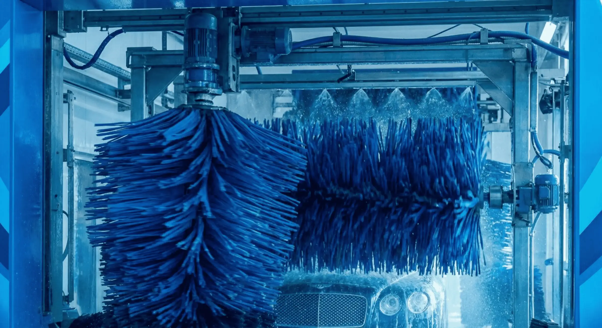
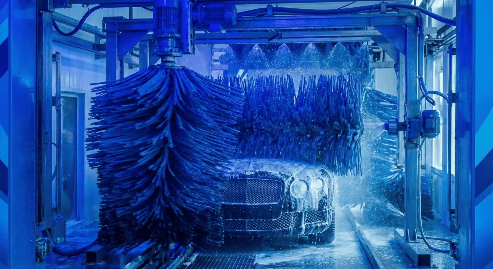
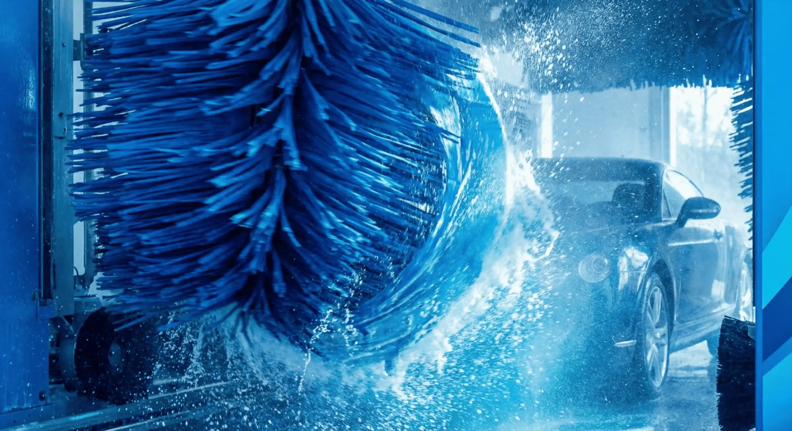

Oto Yıkama Pervanesi Rulman Arızası Nasıl Anlaşılır?
Rulman kaynaklı ses, sert dönüş ve boşluk sorunlarını hızlı testlerle ayırın; planlı değişim zamanı için net karar çerçevesi oluşturun.
Öne Çıkan Son Yazı Yazıya GitBu sayfa, oto yıkama pervanesi yatırımı yapacak işletmeler için hazırlanmış uygulamalı bir içerik merkezi. Model seçimi, montaj, döner rekor arıza teşhisi, basınç-hortum uyumu ve istasyon ekipman planını tek noktadan netleştirir.

Rulman kaynaklı ses, sert dönüş ve boşluk sorunlarını hızlı testlerle ayırın; planlı değişim zamanı için net karar çerçevesi oluşturun.
Öne Çıkan Son Yazı Yazıya GitPervane dönmeme ve takılma sorunlarında 8 adımda kök nedeni ayırın, gereksiz parça değişimini önleyin.
Arıza Teşhisi Yazıya Git
Kış aylarında pervane donması, zor dönme ve sabah ilk çalıştırma risklerini 6 adımda yönetin; duruş süresini azaltın.
Kış Operasyonu Yazıya GitGıcırtı, vuruntu ve titreşim belirtilerini doğru sınıflandırın; 7 adımda kök nedeni bulup gereksiz parça değişimini önleyin.
Arıza Teşhisi Yazıya Git
Tavan ölçüsü, hat yerleşimi, tekli Z ve çiftli boom kurulum farkları, devreye alma testleri ve sahada sık yapılan montaj hatalarını adım adım inceleyin.
Kurulum Rehberi Yazıya GitSu kaçağı, basınç dalgalanması ve dönüşte sıkışma belirtilerini hızlıca teşhis etmek için adım adım kontrol ve bakım çerçevesi.
Arıza Teşhisi Yazıya GitKabin bazlı ekipman planı, pervane-model eşleştirmesi, hat standardizasyonu ve devreye alma kontrol adımlarıyla yatırım öncesi teknik liste.
İstasyon Planı Yazıya GitBasınç kaybını azaltan hortum boyu ve iç çap planı, bağlantı standardı, tekli/çiftli hat yönetimi ve performans düşüşü teşhis adımları.
Teknik Rehber Yazıya GitBoom tekli Z ve boom çiftli pervane arasındaki farkları işletme senaryolarına göre analiz edin. Hangi modelin hangi kabin yapısında daha verimli çalıştığını örneklerle görün.
Teknik Karşılaştırma Yazıya GitTekli Z, çiftli boom ve tır yıkama pervaneleri için güncel fiyat aralıklarını ve teklif öncesi maliyet kalemlerini tek tabloda karşılaştırın.
Fiyat Rehberi Yazıya GitYanlış model seçimini engelleyen teknik kontrol adımları, güvenlik kriterleri ve yatırım geri dönüşünü etkileyen kritik detaylar.
Satın Alma Yazıya GitPeriyodik bakım planı, keçe/döner rekor kontrolü, temizlik rutini ve arıza riskini azaltan uygulamalarla ekipman ömrünü uzatın.
Bakım Yazıya GitAğır vasıta hattı kurarken gerekli ekipman listesini, basınç gereksinimlerini ve doğru pervane konfigürasyonunu adım adım inceleyin.
Tır Yıkama Yazıya GitOto yıkama pervanesinin çalışma mantığını, işletmeye sağladığı operasyonel avantajları ve doğru kullanım senaryolarını öğrenin.
Temel Bilgi Yazıya Git